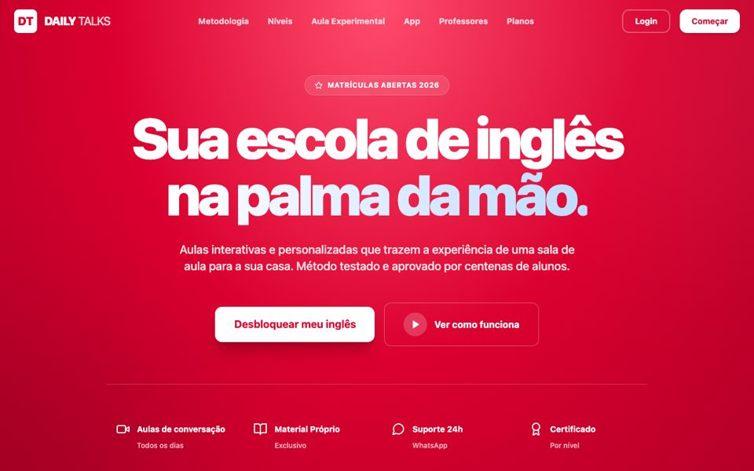
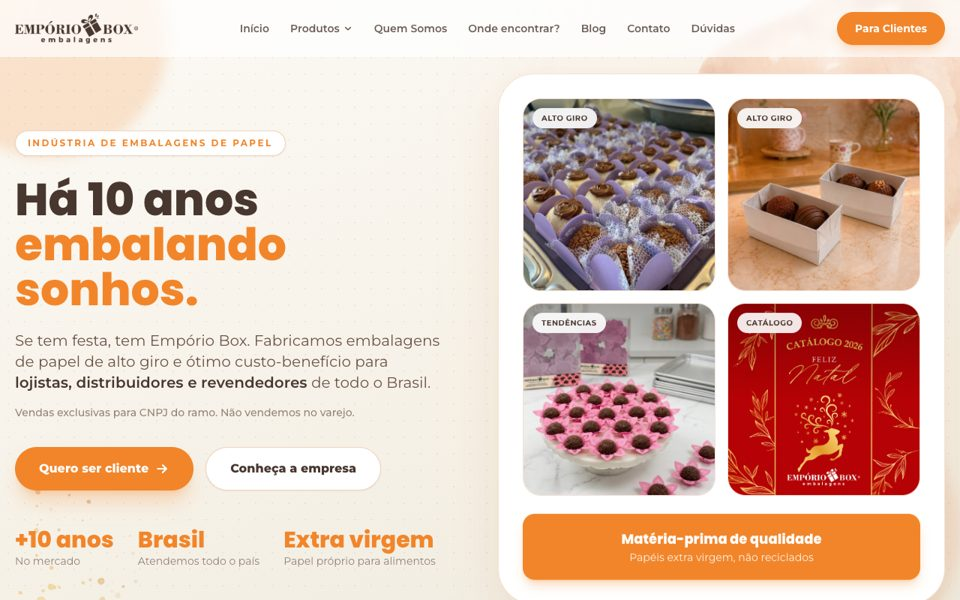
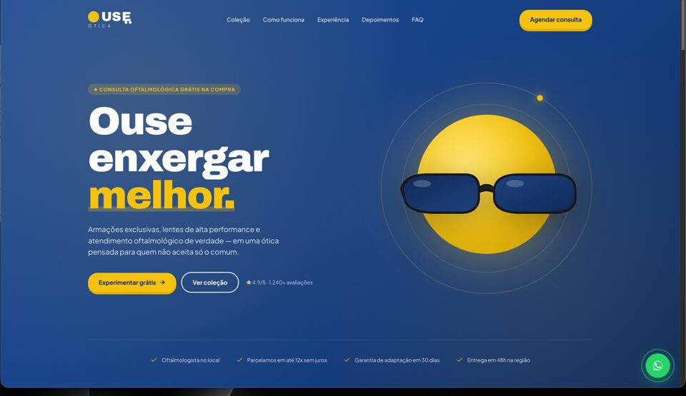

Faça sozinho
Sessão individual
Pra quem quer sair de uma sessão com produtividade real, sem depender de ninguém. Aplico IA direto no seu processo, num formato individual e prático.
Quero uma sessão individualOperações para negócios que já vendem e travaram no processo
Encontro o fluxo que trava venda, onboarding, entrega, cobrança ou retenção. Você recebe o fluxo redesenhado, uma decisão priorizada e um ativo que a equipe consegue usar.
Preço e prazo definidos depois de entender o seu fluxo.
Fluxo operacional crítico
Gargalo encontrado
Achei o gargalo. A venda entrou, mas a passagem para a entrega ainda depende de alguém lembrar.
Ver como o método funcionaComo trabalho
Preço e prazo saem da conversa, não da tela. Cada frente resolve uma necessidade diferente: autonomia, time treinado ou sistema pronto.
Faça sozinho
Pra quem quer sair de uma sessão com produtividade real, sem depender de ninguém. Aplico IA direto no seu processo, num formato individual e prático.
Quero uma sessão individualFaça com o time
Presencial em Fortaleza ou na cidade da sua empresa. O time inteiro aprende a aplicar IA na operação do dia a dia, junto, no mesmo processo real.
Quero treinar meu timeFaça por mim
Mapeio o fluxo, encontro o gargalo e construo o sistema sob medida pra resolver. Começa pelo Mapa do Gargalo, segue pra uma Sprint OPS quando o fluxo pede implementação completa, com Licença OPS e Assento na Operação disponíveis depois.
Método OPS
Ferramentas existentes continuam quando resolvem bem. Cada decisão nasce do fluxo real e do resultado contratado.
Mapeio processo, dado, dependência e ponto único de falha. A decisão vira um material que a equipe consegue usar.
Entrega: Mapa do Gargalo com Ativo de Arranque.Defino o fluxo, o responsável, o escopo e o critério de aceite.
Entrega: processo e cronograma visíveis.Coloco o fluxo em operação, treino a equipe e acompanho o indicador.
Entrega: operação funcionando e medida.Critério de fit
O critério é o estágio do negócio, não o setor. A empresa já vende, possui equipe e perdeu clareza entre as etapas da operação. O mesmo método já foi aplicado em escola, indústria, clínica, ótica e educação digital.
Provas de capacidade
Os cases abaixo pertencem ao histórico profissional e cobrem setores diferentes. O que se repete em todos é o mesmo método: mapear o fluxo, achar o gargalo e medir o resultado.

Clínica de Trânsito NTC
R$ 20 mil para R$ 60 mil por mês
A operação saiu do papel e ganhou controle de agenda, cobrança e financeiro. O faturamento triplicou durante a pandemia.

Sistema Habilita
Mais de R$ 30 mil por mês recuperados
Alertas, controle de caixa e uma régua de cobrança tornaram visível uma dívida que a operação não acompanhava.

Daily Talks
Ecossistema operacional completo
Construí a plataforma acadêmica, os aplicativos do aluno, o CRM comercial e a gestão financeira da escola de inglês. Método testado por centenas de alunos, com matrícula aberta todo ano.

DedetPro / Certificado
Sistema multiempresa em produção
Um produto meu, não um projeto avulso. Hoje roda para várias empresas de dedetização, do atendimento em campo até a emissão de certificado e o financeiro.

Empório Box
ERP industrial completo
Comercial, produção, estoque, compras e financeiro numa fábrica de embalagens com mais de 10 anos de mercado, atendendo lojistas e distribuidores em todo o Brasil.

Ouse Ótica
4,9/5 em mais de 1.240 avaliações
Pipeline de vendas, agenda, atendimento e financeiro reunidos, do primeiro contato do lead até o pós-venda.
Clínica Viviane (EndoQuali)
Operação clínica completa
Prontuário, agenda, CRM comercial e financeiro numa base só, com apoio de IA no atendimento ao paciente. A EndoQuali foi pioneira em atendimento concierge de Endocrinologia em São Paulo.

Danuzio News
Maior perfil de OSINT do Brasil
Portal e operação editorial por trás do maior perfil brasileiro de OSINT, com mais de 500 mil seguidores no Instagram e alcance mensal de milhões de pessoas (Estado de Minas). Acompanhamento mensal em produção.
Portal Marsiglia
Mais de 350 mil seguidores
Portal de conteúdo e comunidade de assinantes de André Marsiglia, advogado constitucionalista, comentarista da Jovem Pan e colunista da Poder360. Acompanhamento mensal em produção.

Miquéias Mesquita
Minha especialidade é pegar um processo confuso, encontrar onde a informação para e transformar o fluxo em algo que a equipe consegue operar e medir.
Trabalhei por sete anos dentro da operação de uma autoescola. Organizei cobrança e gestão numa clínica durante a pandemia. Hoje construo e sustento a operação de escolas, clínicas, indústria, ótica, plataformas de mídia e negócios de educação digital que já vendem e precisam do próximo nível de crescimento.
Próximo passo
Envie uma mensagem com a etapa que mais gera retrabalho. Eu confirmo se o Mapa do Gargalo é a entrada adequada.
Quero avaliar meu fluxo